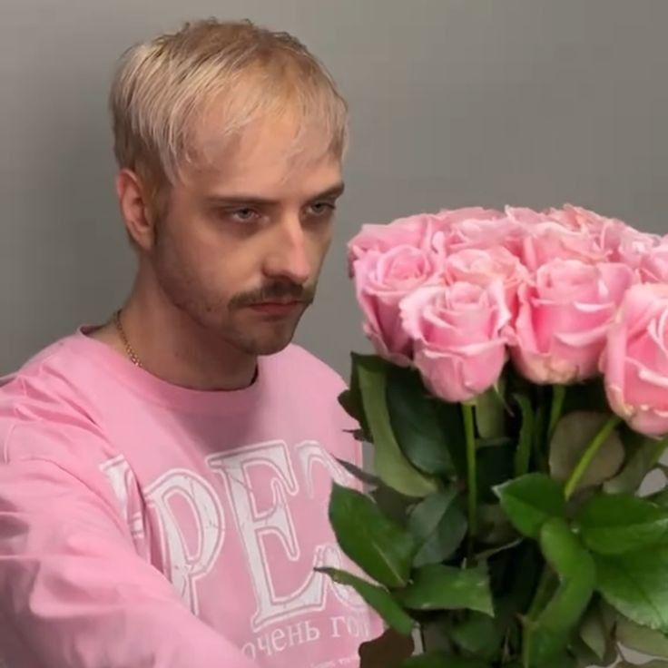
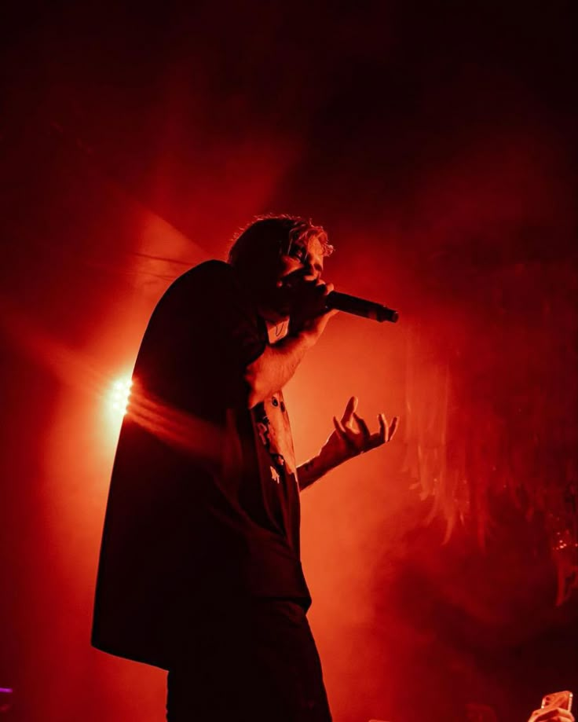

Про мене
Ім'я: Григоренко Поліна
Email: hryhorenkopolina2206@gmail.com
Три слова про мене: Естетика. Код. Естествоиспитатель
"У небо Богами підкинуті і, поклавши руку на серце
Обіцяю: ми повернемося у вільний Ревашоль
А поки що складні інтенції
Залиш, зупинись на мить і насолодись простим:
Як осінь золота, як вулиці порожні, як кружляє листя
І вслухайся, як безодня людської душі
Волає до безодні Божества"
— Pyrokinesis
Минулий семестр (Оцінки)
| Дисципліна | Викладач | Бал | ECTS |
|---|---|---|---|
| Математична логіка, теорія алгоритмів та структури даних | Татарінова О.А. | 75 | С |
| Нарисна геометрія в задачах візуалізації | Федченко Г.В. | 65 | Д |
| Організація баз даних | Мартиненко Г.Ю. | 100 | А |
| Програмування GUI | Дашкевич А.О. | 100 | А |
| Технології програмування | Шаповалова М.І. | 92 | А |
| Іноземна мова | Картун Н.О. | 90 | А |
| ОК СВУ | Ширяєва С.В. | 100 | А |
| Правознавство | Кузьменко О.В. | 100 | А |
Улюблені серіали
Три стани душі

Троянди
Кошеня Ра

Концерт
Рідне місто: Куп’янськ
Куп'янськ — місто з характером. Тут знаходиться відомий пам'ятник байбаку.
Слайд-шоу
Мій улюблений проєкт
Тема:3D-модель Ghost (Simon Riley)
Soap: «Я в кав'ярні, LT.»
Ghost: «І нам чаю візьми.»
Soap: «Кляті британці...»